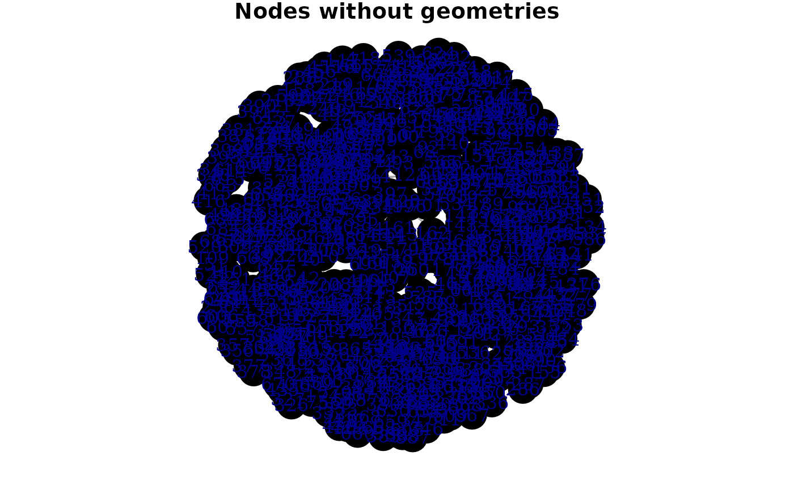
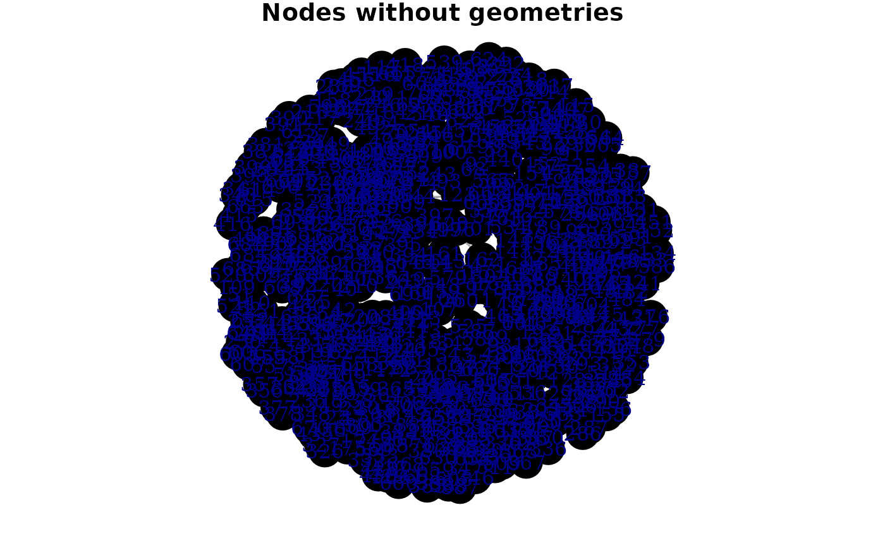

1. The sfnetwork data structure
2022-08-18
Source:vignettes/sfn01_structure.Rmd
sfn01_structure.RmdThe core of the sfnetworks package is the sfnetwork data structure. It inherits the tbl_graph class from the tidygraph package, which itself inherits the igraph class from the igraph package. Therefore, sfnetwork objects are recognized by all network analysis algorithms that igraph offers (which are a lot, see here) as well as by the tidy wrappers that tidygraph has built around them.
It is possible to apply any function from the tidyverse packages for data science directly to a sfnetwork, as long as tidygraph implemented a network specific method for it. On top of that, sfnetworks added several methods for functions from the sf package for spatial data science, such that you can also apply those directly to the network. This takes away the need to constantly switch between the tbl_graph, tbl_df and sf classes when working with geospatial networks.
Philosophy
The philosophy of a tbl_graph object is best described by the following paragraph from the tidygraph introduction: “Relational data cannot in any meaningful way be encoded as a single tidy data frame. On the other hand, both node and edge data by itself fits very well within the tidy concept as each node and edge is, in a sense, a single observation. Thus, a close approximation of tidyness for relational data is two tidy data frames, one describing the node data and one describing the edge data.”
Since sfnetworks subclass tbl_graph, it shares the same philosophy. However, it extends it into the domain of geospatial data analysis, where each observation has a location in geographical space. For that, it brings sf into the game. An sf object stores the geographical coordinates of each observation in standardized format in a geometry list-column, which has a Coordinate Reference System (CRS) associated with it. Thus, in sfnetworks, we re-formulate the last sentence of the paragraph above to the following. “A close approximation of tidyness for relational geospatial data is two sf objects, one describing the node data and one describing the edge data.”
We do need to make a note here. In a geospatial network, the nodes always have coordinates in geographic space, and thus, can always be described by an sf object. The edges, however, can also be described by only the indices of the nodes at their ends. This still makes them geospatial, because they connect two specific points in space, but the spatial information is not explicitly attached to them. Both representations can be useful. In road networks, for example, it makes sense to explicitly draw a line geometry between two nodes, while in geolocated social networks, it probably does not. sfnetworks supports both types. It can either describe edges as an sf object, with a linestring geometry stored in a geometry list-column, or as a regular data frame, with the spatial information implicitly encoded in the node indices of the endpoints. We refer to these two different types of edges as spatially explicit edges and spatially implicit edges respectively. In most of the documentation, however, we focus on the first type, and talk about edges as being an sf object with linestring geometries.
Construction
From a nodes and edges table
The most basic way to construct a sfnetwork with spatially explicit edges is by providing the sfnetwork construction function one sf object containing the nodes, and another sf object containing the edges. This edges table should include a from and to column referring to the node indices of the edge endpoints. With a node index we mean the position of a node in the nodes table (i.e. its rownumber). A small toy example:
p1 = st_point(c(7, 51))
p2 = st_point(c(7, 52))
p3 = st_point(c(8, 52))
p4 = st_point(c(8, 51.5))
l1 = st_sfc(st_linestring(c(p1, p2)))
l2 = st_sfc(st_linestring(c(p1, p4, p3)))
l3 = st_sfc(st_linestring(c(p3, p2)))
edges = st_as_sf(c(l1, l2, l3), crs = 4326)
nodes = st_as_sf(c(st_sfc(p1), st_sfc(p2), st_sfc(p3)), crs = 4326)
edges$from = c(1, 1, 3)
edges$to = c(2, 3, 2)
net = sfnetwork(nodes, edges)
#> Checking if spatial network structure is valid...
#> Spatial network structure is valid
net#> # A sfnetwork with 3 nodes and 3 edges
#> #
#> # CRS: EPSG:4326
#> #
#> # A directed acyclic simple graph with 1 component with spatially explicit edges
#> #
#> # Node Data: 3 × 1 (active)
#> # Geometry type: POINT
#> # Dimension: XY
#> # Bounding box: xmin: 7 ymin: 51 xmax: 8 ymax: 52
#> x
#> <POINT [°]>
#> 1 (7 51)
#> 2 (7 52)
#> 3 (8 52)
#> #
#> # Edge Data: 3 × 3
#> # Geometry type: LINESTRING
#> # Dimension: XY
#> # Bounding box: xmin: 7 ymin: 51 xmax: 8 ymax: 52
#> from to x
#> <int> <int> <LINESTRING [°]>
#> 1 1 2 (7 51, 7 52)
#> 2 1 3 (7 51, 8 51.5, 8 52)
#> 3 3 2 (8 52, 7 52)
class(net)
#> [1] "sfnetwork" "tbl_graph" "igraph"By default, the created network is a directed network. If you want to create an undirected network, set directed = FALSE. Note that for undirected networks, the indices in the from and to columns are re-arranged such that the from index is always smaller than (or equal to, for loop edges) the to index. However, the linestring geometries remain unchanged. That means that in undirected networks it can happen that for some edges the from index refers to the last point of the edge linestring, and the to index to the first point. The behavior of ordering the indices comes from igraph and might be confusing, but remember that in undirected networks the terms from and to do not have a meaning and can thus be used interchangeably.
net = sfnetwork(nodes, edges, directed = FALSE)
#> Checking if spatial network structure is valid...
#> Spatial network structure is valid
net#> # A sfnetwork with 3 nodes and 3 edges
#> #
#> # CRS: EPSG:4326
#> #
#> # An undirected simple graph with 1 component with spatially explicit edges
#> #
#> # Node Data: 3 × 1 (active)
#> # Geometry type: POINT
#> # Dimension: XY
#> # Bounding box: xmin: 7 ymin: 51 xmax: 8 ymax: 52
#> x
#> <POINT [°]>
#> 1 (7 51)
#> 2 (7 52)
#> 3 (8 52)
#> #
#> # Edge Data: 3 × 3
#> # Geometry type: LINESTRING
#> # Dimension: XY
#> # Bounding box: xmin: 7 ymin: 51 xmax: 8 ymax: 52
#> from to x
#> <int> <int> <LINESTRING [°]>
#> 1 1 2 (7 51, 7 52)
#> 2 1 3 (7 51, 8 51.5, 8 52)
#> 3 2 3 (8 52, 7 52)Instead of from and to columns containing integers that refer to node indices, the provided edges table can also have from and to columns containing characters that refer to node keys. In that case, you should tell the construction function which column in the nodes table contains these keys. Internally, they will then be converted to integer indices.
nodes$name = c("city", "village", "farm")
edges$from = c("city", "city", "farm")
edges$to = c("village", "farm", "village")
edges
#> Simple feature collection with 3 features and 2 fields
#> Geometry type: LINESTRING
#> Dimension: XY
#> Bounding box: xmin: 7 ymin: 51 xmax: 8 ymax: 52
#> Geodetic CRS: WGS 84
#> x from to
#> 1 LINESTRING (7 51, 7 52) city village
#> 2 LINESTRING (7 51, 8 51.5, 8... city farm
#> 3 LINESTRING (8 52, 7 52) farm village
net = sfnetwork(nodes, edges, node_key = "name")
#> Checking if spatial network structure is valid...
#> Spatial network structure is valid
net#> # A sfnetwork with 3 nodes and 3 edges
#> #
#> # CRS: EPSG:4326
#> #
#> # A directed acyclic simple graph with 1 component with spatially explicit edges
#> #
#> # Node Data: 3 × 2 (active)
#> # Geometry type: POINT
#> # Dimension: XY
#> # Bounding box: xmin: 7 ymin: 51 xmax: 8 ymax: 52
#> x name
#> <POINT [°]> <chr>
#> 1 (7 51) city
#> 2 (7 52) village
#> 3 (8 52) farm
#> #
#> # Edge Data: 3 × 3
#> # Geometry type: LINESTRING
#> # Dimension: XY
#> # Bounding box: xmin: 7 ymin: 51 xmax: 8 ymax: 52
#> from to x
#> <int> <int> <LINESTRING [°]>
#> 1 1 2 (7 51, 7 52)
#> 2 1 3 (7 51, 8 51.5, 8 52)
#> 3 3 2 (8 52, 7 52)If your edges table does not have linestring geometries, but only references to node indices or keys, you can tell the construction function to create the linestring geometries during construction. This will draw a straight line between the endpoints of each edge.
st_geometry(edges) = NULL
other_net = sfnetwork(nodes, edges, edges_as_lines = TRUE)
#> Checking if spatial network structure is valid...
#> Spatial network structure is valid
plot(net, cex = 2, lwd = 2, main = "Original geometries")
plot(other_net, cex = 2, lwd = 2, main = "Straight lines")

A sfnetwork should have a valid spatial network structure. For the nodes, this currently means that their geometries should all be of type POINT. In the case of spatially explicit edges, edge geometries should all be of type LINESTRING, nodes and edges should have the same CRS and endpoints of edges should match their corresponding node coordinates.
If your provided data do not meet these requirements, the construction function will throw an error.
st_geometry(edges) = st_sfc(c(l2, l3, l1), crs = 4326)
net = sfnetwork(nodes, edges)
#> Checking if spatial network structure is valid...
#> Error: Edge boundaries do not match their corresponding nodesYou can skip the validity checks if you are already sure your input data meet the requirements, or if you don’t care that they don’t. To do so, set force = TRUE. However, remember that all functions in sfnetworks are designed with the assumption that the network has a valid structure.
From an sf object with linestring geometries
Instead of already providing a nodes and edges table with a valid network structure, it is also possible to create a network by only providing an sf object with geometries of type LINESTRING. Probably, this way of construction is most convenient and will be most often used.
It works as follows: the provided lines form the edges of the network, and nodes are created at their endpoints. Endpoints that are shared between multiple lines become one single node.
See below an example using the Roxel dataset that comes with the package. This dataset is an sf object with LINESTRING geometries that form the road network of Roxel, a neighborhood in the German city of Münster.
roxel#> Simple feature collection with 851 features and 2 fields
#> Geometry type: LINESTRING
#> Dimension: XY
#> Bounding box: xmin: 7.522594 ymin: 51.94151 xmax: 7.546705 ymax: 51.9612
#> Geodetic CRS: WGS 84
#> # A tibble: 851 × 3
#> name type geometry
#> * <chr> <fct> <LINESTRING [°]>
#> 1 Havixbecker Strasse residential (7.533722 51.95556, 7.533461 51.95576)
#> 2 Pienersallee secondary (7.532442 51.95422, 7.53236 51.95377, 7.53…
#> 3 Schulte-Bernd-Strasse residential (7.532709 51.95209, 7.532823 51.95239, 7.5…
#> 4 NA path (7.540063 51.94468, 7.539696 51.94479, 7.5…
#> 5 Welsingheide residential (7.537673 51.9475, 7.537614 51.94562)
#> 6 NA footway (7.543791 51.94733, 7.54369 51.94686, 7.54…
#> 7 NA footway (7.54012 51.94478, 7.539931 51.94514)
#> 8 NA path (7.53822 51.94546, 7.538131 51.94549, 7.53…
#> 9 NA track (7.540063 51.94468, 7.540338 51.94468, 7.5…
#> 10 NA track (7.5424 51.94599, 7.54205 51.94629, 7.5419…
#> # … with 841 more rows
#> # ℹ Use `print(n = ...)` to see more rows
net = as_sfnetwork(roxel)
plot(net)
Other methods to convert ‘foreign’ objects into a sfnetwork exists as well, e.g. for SpatialLinesNetwork objects from stplanr and linnet objects from spatstat. See here for an overview.
Activation
A sfnetwork is a multitable object in which the core network elements (i.e. nodes and edges) are embedded as sf objects. However, thanks to the neat structure of tidygraph, there is no need to first extract one of those elements before you are able to apply your favorite sf function or tidyverse verb. Instead, there is always one element at a time labeled as active. This active element is the target of data manipulation. All functions from sf and the tidyverse that are called on a sfnetwork, are internally applied to that active element. The active element can be changed with the activate() verb, i.e. by calling activate("nodes") or activate("edges"). For example, setting the geographical length of edges as edge weights and subsequently calculating the betweenness centrality of nodes can be done as shown below. Note that tidygraph::centrality_betweenness() does require you to always explicitly specify which column should be used as edge weights, and if the network should be treated as directed or not.
net %>%
activate("edges") %>%
mutate(weight = edge_length()) %>%
activate("nodes") %>%
mutate(bc = centrality_betweenness(weights = weight, directed = FALSE))
#> Warning in betweenness(graph = graph, v = V(graph), directed = directed, :
#> 'nobigint' is deprecated since igraph 1.3 and will be removed in igraph 1.4#> # A sfnetwork with 701 nodes and 851 edges
#> #
#> # CRS: EPSG:4326
#> #
#> # A directed multigraph with 14 components with spatially explicit edges
#> #
#> # Node Data: 701 × 2 (active)
#> # Geometry type: POINT
#> # Dimension: XY
#> # Bounding box: xmin: 7.522622 ymin: 51.94151 xmax: 7.546705 ymax: 51.9612
#> geometry bc
#> <POINT [°]> <dbl>
#> 1 (7.533722 51.95556) 13808
#> 2 (7.533461 51.95576) 9777
#> 3 (7.532442 51.95422) 35240
#> 4 (7.53209 51.95328) 31745
#> 5 (7.532709 51.95209) 7174
#> 6 (7.532869 51.95257) 9081
#> # … with 695 more rows
#> #
#> # Edge Data: 851 × 6
#> # Geometry type: LINESTRING
#> # Dimension: XY
#> # Bounding box: xmin: 7.522594 ymin: 51.94151 xmax: 7.546705 ymax: 51.9612
#> from to name type geometry weight
#> <int> <int> <chr> <fct> <LINESTRING [°]> [m]
#> 1 1 2 Havixbecker Strasse residential (7.533722 51.95556, 7.53… 28.8
#> 2 3 4 Pienersallee secondary (7.532442 51.95422, 7.53… 108.
#> 3 5 6 Schulte-Bernd-Strasse residential (7.532709 51.95209, 7.53… 54.3
#> # … with 848 more rowsSome of the functions have effects also outside of the active element. For example, whenever nodes are removed from the network, the edges terminating at those nodes will be removed too. This behavior is not symmetric: when removing edges, the endpoints of those edges remain, even if they are not an endpoint of any other edge. This is because by definition edges can never exist without nodes on their ends, while nodes can peacefully exist in isolation.
Extraction
Neither all sf functions nor all tidyverse verbs can be directly applied to a sfnetwork as described above. That is because there is a clear limitation in the relational data structure that requires rows to maintain their identity. Hence, a verb like dplyr::summarise() has no clear application for a network. For sf functions, this means also that the valid spatial network structure should be maintained. That is, functions that summarise geometries of an sf object, or (may) change their type, shape or position, are not supported directly. These are for example most of the geometric unary operations.
These functions cannot be directly applied to a sfnetwork, but no need to panic! The active element of the network can at any time be extracted with sf::st_as_sf() (or tibble::as_tibble()). This allows you to continue a specific part of your analysis outside of the network structure, using a regular sf object. Afterwards you could join inferred information back into the network. See the vignette about spatial joins for more details.
#> Simple feature collection with 701 features and 0 fields
#> Geometry type: POINT
#> Dimension: XY
#> Bounding box: xmin: 7.522622 ymin: 51.94151 xmax: 7.546705 ymax: 51.9612
#> Geodetic CRS: WGS 84
#> # A tibble: 701 × 1
#> geometry
#> <POINT [°]>
#> 1 (7.533722 51.95556)
#> 2 (7.533461 51.95576)
#> 3 (7.532442 51.95422)
#> 4 (7.53209 51.95328)
#> 5 (7.532709 51.95209)
#> 6 (7.532869 51.95257)
#> 7 (7.540063 51.94468)
#> 8 (7.53822 51.94546)
#> 9 (7.537673 51.9475)
#> 10 (7.537614 51.94562)
#> # … with 691 more rows
#> # ℹ Use `print(n = ...)` to see more rowsAlthough we recommend for reasons of clarity to always explicitly activate an element before extraction, you can also use a shortcut by providing the name of the element you want to extract as extra argument to sf::st_as_sf():
st_as_sf(net, "edges")#> Simple feature collection with 851 features and 4 fields
#> Geometry type: LINESTRING
#> Dimension: XY
#> Bounding box: xmin: 7.522594 ymin: 51.94151 xmax: 7.546705 ymax: 51.9612
#> Geodetic CRS: WGS 84
#> # A tibble: 851 × 5
#> from to name type geometry
#> <int> <int> <chr> <fct> <LINESTRING [°]>
#> 1 1 2 Havixbecker Strasse residential (7.533722 51.95556, 7.533461 5…
#> 2 3 4 Pienersallee secondary (7.532442 51.95422, 7.53236 51…
#> 3 5 6 Schulte-Bernd-Strasse residential (7.532709 51.95209, 7.532823 5…
#> 4 7 8 NA path (7.540063 51.94468, 7.539696 5…
#> 5 9 10 Welsingheide residential (7.537673 51.9475, 7.537614 51…
#> 6 11 12 NA footway (7.543791 51.94733, 7.54369 51…
#> 7 13 14 NA footway (7.54012 51.94478, 7.539931 51…
#> 8 8 10 NA path (7.53822 51.94546, 7.538131 51…
#> 9 7 15 NA track (7.540063 51.94468, 7.540338 5…
#> 10 16 17 NA track (7.5424 51.94599, 7.54205 51.9…
#> # … with 841 more rows
#> # ℹ Use `print(n = ...)` to see more rowsVisualization
The sfnetworks package does not (yet?) include advanced visualization options. However, as already demonstrated before, a simple plot method is provided, which gives a quick view of how the network looks like.
plot(net)
If you have ggplot2 installed, you can also use ggplot2::autoplot() to directly create a simple ggplot of the network.

For advanced visualization, we encourage to extract nodes and edges as sf objects, and use one of the many ways to map those in R, either statically or interactively. Think of sf’s default plot method, ggplot2::geom_sf(), tmap, mapview, et cetera.
net = net %>%
activate("nodes") %>%
mutate(bc = centrality_betweenness())
#> Warning in betweenness(graph = graph, v = V(graph), directed = directed, :
#> 'nobigint' is deprecated since igraph 1.3 and will be removed in igraph 1.4
ggplot() +
geom_sf(data = st_as_sf(net, "edges"), col = "grey50") +
geom_sf(data = st_as_sf(net, "nodes"), aes(col = bc, size = bc)) +
ggtitle("Betweenness centrality in Münster Roxel")
Note: it would be great to see this change in the future, for example by good integration with ggraph. Contributions are very welcome regarding this!
Spatial information
Geometries
Geometries of nodes and edges are stored in an ‘sf-style’ geometry list-column in respectively the nodes and edges tables of the network. The geometries of the active element of the network can be extracted with the sf function sf::st_geometry(), or from any element by specifying the element of interest as additional argument, e.g. sf::st_geometry(net, "edges").
net %>%
activate("nodes") %>%
st_geometry()
#> Geometry set for 701 features
#> Geometry type: POINT
#> Dimension: XY
#> Bounding box: xmin: 7.522622 ymin: 51.94151 xmax: 7.546705 ymax: 51.9612
#> Geodetic CRS: WGS 84
#> First 5 geometries:
#> POINT (7.533722 51.95556)
#> POINT (7.533461 51.95576)
#> POINT (7.532442 51.95422)
#> POINT (7.53209 51.95328)
#> POINT (7.532709 51.95209)Geometries can be replaced using either st_geometry(x) = value or the pipe-friendly st_set_geometry(x, value). However, a replacement that breaks the valid spatial network structure will throw an error.
Replacing a geometry with NULL will remove the geometries. Removing edge geometries will result in a sfnetwork with spatially implicit edges. Removing node geometries will result in a tbl_graph, losing the spatial structure.
net %>%
activate("edges") %>%
st_set_geometry(NULL) %>%
plot(draw_lines = FALSE, main = "Edges without geometries")
net %>%
activate("nodes") %>%
st_set_geometry(NULL) %>%
plot(vertex.color = "black", main = "Nodes without geometries") 

Geometries can be replaced also by using geometry unary operations, as long as they don’t break the valid spatial network structure. In practice this means that only sf::st_reverse() and sf::st_simplify() are supported. When calling sf::st_reverse() on the edges of a directed network, not only the geometries will be reversed, but the from and to columns of the edges will be swapped as well. In the case of undirected networks these columns remain unchanged, since the terms from and to don’t have a meaning in undirected networks and can be used interchangeably. Note that reversing linestrings using sf::st_reverse() only works when sf links to a GEOS version of at least 3.7.0.
as_sfnetwork(roxel, directed = TRUE) %>%
activate("edges") %>%
st_reverse()
#> Warning: In directed networks st_reverse swaps columns 'to' and 'from'#> # A sfnetwork with 701 nodes and 851 edges
#> #
#> # CRS: EPSG:4326
#> #
#> # A directed multigraph with 14 components with spatially explicit edges
#> #
#> # Edge Data: 851 × 5 (active)
#> # Geometry type: LINESTRING
#> # Dimension: XY
#> # Bounding box: xmin: 7.522594 ymin: 51.94151 xmax: 7.546705 ymax: 51.9612
#> from to name type geometry
#> <int> <int> <chr> <fct> <LINESTRING [°]>
#> 1 2 1 Havixbecker Strasse residential (7.533461 51.95576, 7.533722 51…
#> 2 4 3 Pienersallee secondary (7.53209 51.95328, 7.53236 51.9…
#> 3 6 5 Schulte-Bernd-Strasse residential (7.532869 51.95257, 7.532823 51…
#> 4 8 7 NA path (7.53822 51.94546, 7.538353 51.…
#> 5 10 9 Welsingheide residential (7.537614 51.94562, 7.537673 51…
#> 6 12 11 NA footway (7.543751 51.94677, 7.54369 51.…
#> # … with 845 more rows
#> #
#> # Node Data: 701 × 1
#> # Geometry type: POINT
#> # Dimension: XY
#> # Bounding box: xmin: 7.522622 ymin: 51.94151 xmax: 7.546705 ymax: 51.9612
#> geometry
#> <POINT [°]>
#> 1 (7.533722 51.95556)
#> 2 (7.533461 51.95576)
#> 3 (7.532442 51.95422)
#> # … with 698 more rowsCoordinates
The coordinates of the active element of a sfnetwork can be extracted with the sf function sf::st_coordinates(), or from any element by specifying the element of interest as additional argument, e.g. sf::st_coordinate(net, "edges").
node_coords = net %>%
activate("nodes") %>%
st_coordinates()
node_coords[1:4, ]
#> X Y
#> 1 7.533722 51.95556
#> 2 7.533461 51.95576
#> 3 7.532442 51.95422
#> 4 7.532090 51.95328Besides X and Y coordinates, the features in the network can possibly also have Z and M coordinates.
# Currently there are neither Z nor M coordinates.
st_z_range(net)
#> NULL
st_m_range(net)
#> NULL
# Add Z coordinates with value 0 to all features.
# This will affect both nodes and edges, no matter which element is active.
st_zm(net, drop = FALSE, what = "Z")#> # A sfnetwork with 701 nodes and 851 edges
#> #
#> # CRS: EPSG:4326
#> #
#> # A directed multigraph with 14 components with spatially explicit edges
#> #
#> # Node Data: 701 × 2 (active)
#> # Geometry type: POINT
#> # Dimension: XYZ
#> # Bounding box: xmin: 7.522622 ymin: 51.94151 xmax: 7.546705 ymax: 51.9612
#> geometry bc
#> <POINT [°]> <dbl>
#> 1 Z (7.533722 51.95556 0) 12936.
#> 2 Z (7.533461 51.95576 0) 11824
#> 3 Z (7.532442 51.95422 0) 11926.
#> 4 Z (7.53209 51.95328 0) 7259.
#> 5 Z (7.532709 51.95209 0) 5668
#> 6 Z (7.532869 51.95257 0) 2374
#> # … with 695 more rows
#> #
#> # Edge Data: 851 × 5
#> # Geometry type: LINESTRING
#> # Dimension: XYZ
#> # Bounding box: xmin: 7.522594 ymin: 51.94151 xmax: 7.546705 ymax: 51.9612
#> from to name type geometry
#> <int> <int> <chr> <fct> <LINESTRING [°]>
#> 1 1 2 Havixbecker Strasse residential Z (7.533722 51.95556 0, 7.53346…
#> 2 3 4 Pienersallee secondary Z (7.532442 51.95422 0, 7.53236…
#> 3 5 6 Schulte-Bernd-Strasse residential Z (7.532709 51.95209 0, 7.53282…
#> # … with 848 more rowsCoordinate query functions can be used for the nodes to extract only specific coordinate values. Such query functions are meant to be used inside dplyr::mutate() or dplyr::filter() verbs. Whenever a coordinate value is not available for a node, NA is returned along with a warning. Note also that the two-digit coordinate values are only for printing. The real values contain just as much precision as in the geometry list column.
net %>%
st_zm(drop = FALSE, what = "Z") %>%
mutate(X = node_X(), Y = node_Y(), Z = node_Z(), M = node_M())
#> Warning: M coordinates are not available#> # A sfnetwork with 701 nodes and 851 edges
#> #
#> # CRS: EPSG:4326
#> #
#> # A directed multigraph with 14 components with spatially explicit edges
#> #
#> # Node Data: 701 × 6 (active)
#> # Geometry type: POINT
#> # Dimension: XYZ
#> # Bounding box: xmin: 7.522622 ymin: 51.94151 xmax: 7.546705 ymax: 51.9612
#> geometry bc X Y Z M
#> <POINT [°]> <dbl> <dbl> <dbl> <dbl> <lgl>
#> 1 Z (7.533722 51.95556 0) 12936. 7.53 52.0 0 NA
#> 2 Z (7.533461 51.95576 0) 11824 7.53 52.0 0 NA
#> 3 Z (7.532442 51.95422 0) 11926. 7.53 52.0 0 NA
#> 4 Z (7.53209 51.95328 0) 7259. 7.53 52.0 0 NA
#> 5 Z (7.532709 51.95209 0) 5668 7.53 52.0 0 NA
#> 6 Z (7.532869 51.95257 0) 2374 7.53 52.0 0 NA
#> # … with 695 more rows
#> #
#> # Edge Data: 851 × 5
#> # Geometry type: LINESTRING
#> # Dimension: XYZ
#> # Bounding box: xmin: 7.522594 ymin: 51.94151 xmax: 7.546705 ymax: 51.9612
#> from to name type geometry
#> <int> <int> <chr> <fct> <LINESTRING [°]>
#> 1 1 2 Havixbecker Strasse residential Z (7.533722 51.95556 0, 7.53346…
#> 2 3 4 Pienersallee secondary Z (7.532442 51.95422 0, 7.53236…
#> 3 5 6 Schulte-Bernd-Strasse residential Z (7.532709 51.95209 0, 7.53282…
#> # … with 848 more rowsCoordinate Reference System
The Coordinate Reference System in which the coordinates of the network geometries are stored can be extracted with the sf function sf::st_crs(). The CRS in a valid spatial network structure is always the same for nodes and edges.
st_crs(net)
#> Coordinate Reference System:
#> User input: EPSG:4326
#> wkt:
#> GEOGCRS["WGS 84",
#> DATUM["World Geodetic System 1984",
#> ELLIPSOID["WGS 84",6378137,298.257223563,
#> LENGTHUNIT["metre",1]]],
#> PRIMEM["Greenwich",0,
#> ANGLEUNIT["degree",0.0174532925199433]],
#> CS[ellipsoidal,2],
#> AXIS["geodetic latitude (Lat)",north,
#> ORDER[1],
#> ANGLEUNIT["degree",0.0174532925199433]],
#> AXIS["geodetic longitude (Lon)",east,
#> ORDER[2],
#> ANGLEUNIT["degree",0.0174532925199433]],
#> USAGE[
#> SCOPE["Horizontal component of 3D system."],
#> AREA["World."],
#> BBOX[-90,-180,90,180]],
#> ID["EPSG",4326]]The CRS can be set using either st_crs(x) = value or the pipe-friendly st_set_crs(x, value). The CRS will always be set for both the nodes and edges, no matter which element is active. However, setting the CRS only assigns the given CRS to the network. It does not transform the coordinates into a different CRS! Coordinates can be transformed using the sf function sf::st_transform(). Since the CRS is the same for nodes and edges, transforming coordinates of the active element into a different CRS will automatically also transform the coordinates of the inactive element into the same target CRS.
st_transform(net, 3035)#> # A sfnetwork with 701 nodes and 851 edges
#> #
#> # CRS: EPSG:3035
#> #
#> # A directed multigraph with 14 components with spatially explicit edges
#> #
#> # Node Data: 701 × 2 (active)
#> # Geometry type: POINT
#> # Dimension: XY
#> # Bounding box: xmin: 4150707 ymin: 3206375 xmax: 4152367 ymax: 3208565
#> geometry bc
#> <POINT [m]> <dbl>
#> 1 (4151491 3207923) 12936.
#> 2 (4151474 3207946) 11824
#> 3 (4151398 3207777) 11926.
#> 4 (4151370 3207673) 7259.
#> 5 (4151408 3207539) 5668
#> 6 (4151421 3207592) 2374
#> # … with 695 more rows
#> #
#> # Edge Data: 851 × 5
#> # Geometry type: LINESTRING
#> # Dimension: XY
#> # Bounding box: xmin: 4150707 ymin: 3206375 xmax: 4152367 ymax: 3208565
#> from to name type geometry
#> <int> <int> <chr> <fct> <LINESTRING [m]>
#> 1 1 2 Havixbecker Strasse residential (4151491 3207923, 4151474 32079…
#> 2 3 4 Pienersallee secondary (4151398 3207777, 4151390 32077…
#> 3 5 6 Schulte-Bernd-Strasse residential (4151408 3207539, 4151417 32075…
#> # … with 848 more rowsPrecision
The precision in which the coordinates of the network geometries are stored can be extracted with the sf function sf::st_precision(). The precision in a valid spatial network structure is always the same for nodes and edges.
st_precision(net)
#> [1] 0Precision can be set using st_set_precision(x, value). The precision will always be set for both the nodes and edges, no matter which element is active.
net %>%
st_set_precision(1) %>%
st_precision()
#> [1] 1Bounding box
The bounding box of the active element of a sfnetwork can be extracted with the sf function sf::st_bbox(), or from any element by specifying the element of interest as additional argument, e.g. sf::st_bbox(net, "edges").
net %>%
activate("nodes") %>%
st_bbox()
#> xmin ymin xmax ymax
#> 7.522622 51.941512 7.546705 51.961203The bounding boxes of the nodes and edges are not necessarily the same. Therefore, sfnetworks adds the st_network_bbox() function to retrieve the combined bounding box of the nodes and edges. In this combined bounding box, the most extreme coordinates of the two individual element bounding boxes are preserved. Hence, the xmin value of the network bounding box is the smallest xmin value of the node and edge bounding boxes, et cetera.
node1 = st_point(c(8, 51))
node2 = st_point(c(7, 51.5))
node3 = st_point(c(8, 52))
node4 = st_point(c(9, 51))
edge1 = st_sfc(st_linestring(c(node1, node2, node3)))
nodes = st_as_sf(c(st_sfc(node1), st_sfc(node3), st_sfc(node4)))
edges = st_as_sf(edge1)
edges$from = 1
edges$to = 2
small_net = sfnetwork(nodes, edges)
#> Checking if spatial network structure is valid...
#> Spatial network structure is valid
node_bbox = st_as_sfc(st_bbox(activate(small_net, "nodes")))
edge_bbox = st_as_sfc(st_bbox(activate(small_net, "edges")))
net_bbox = st_as_sfc(st_network_bbox(small_net))
plot(small_net, lwd = 2, cex = 4, main = "Element bounding boxes")
plot(node_bbox, border = "red", lty = 2, lwd = 4, add = TRUE)
plot(edge_bbox, border = "blue", lty = 2, lwd = 4, add = TRUE)
plot(small_net, lwd = 2, cex = 4, main = "Network bounding box")
plot(net_bbox, border = "red", lty = 2, lwd = 4, add = TRUE)

Attribute-geometry relationships
In sf objects there is the possibility to store information about how attributes relate to geometries (for more information, see here). You can get and set this information with the function sf::st_agr() (for the setter, you can also use the pipe-friendly version sf::st_set_agr()). In a sfnetwork, you can use the same functions to get and set this information for the active element of the network.
Note that the to and from columns are not really attributes of edges seen from a network analysis perspective, but they are included in the agr factor to ensure smooth interaction with sf.
net %>%
activate("edges") %>%
st_set_agr(c("name" = "constant", "type" = "constant")) %>%
st_agr()
#> from to name type
#> <NA> <NA> constant constant
#> Levels: constant aggregate identityHowever, be careful, because we are currently not sure if this information survives all functions from igraph and tidygraph. If you have any issues with this, please let us know in our issue tracker.